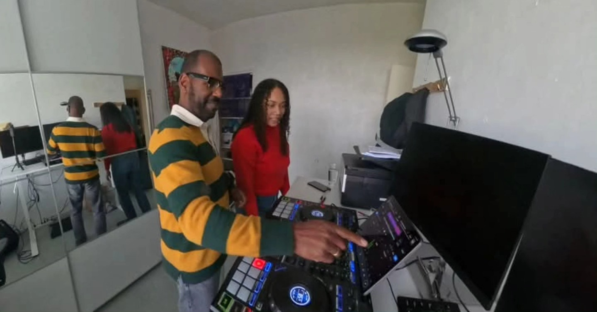

DJ voor je verjaardag of jubileum
50, 60 of 70 jaar? Een jubileum? Ik draai wat jouw gasten kennen en waar ze op dansen: 70s, 80s, 90s, Nederlandstalig, salsa en wat er verder op je lijstje staat.
Van 18 tot 80 op de dansvloer
Op een verjaardag staan drie generaties in één zaal. Ik wissel genres af zodat iedereen z'n moment heeft, en hou de vloer vol.
70s, 80s, 90s en Nederlandstalig
De klassiekers waar je gasten op zijn opgegroeid, afgewisseld met wat de jongere gasten willen horen. Guilty pleasures mogen ook.
Thuis, in de tuin of op locatie
Ik draai net zo lief in je woonkamer of onder een partytent als in een zaal. Een normaal stopcontact is genoeg; ik hou rekening met de buren.
Ontzorgd van begin tot eind
Geluid, licht, laser, rookmachine en sfeerverlichting neem ik mee. Ik bouw zelf op en af; jij hoeft alleen maar te feesten.
Verzoekjes en verrassingen
Een speech, een speciaal nummer voor de jarige, een spontane rap van een gast: ik heb de microfoon klaar en pik het op.
Persoonlijk gesprek vooraf
In de week voor het feest bellen we: wat moet er zeker in, wat juist niet, hoe ziet de avond eruit.
Ook salsa, dancehall en reggaeton
Een thema of een specifieke stijl? Salsa-avonden, Caribische vibes, Keti Koti: ik heb het allemaal gedraaid.
Wat jarigen en jubilarissen zeggen
De eerste reviews van direct geboekte verjaardagen verschijnen hier binnenkort. Tot die tijd: bel gerust een referentie.
Neem contact opLocaties waar ik draaide
45 locaties in Zuid-Holland en daarbuiten, van landgoed tot strandtent. Reiskosten gratis binnen 40 km van Rotterdam.
- de Bijenkorf · Rotterdam
- Sail 2025 · Amsterdam
- Sporting Club de Uitweg
Veelgestelde vragen over een verjaardags-DJ
Hoe lang draai je?
Standaard 4 tot 6 uur, afhankelijk van het pakket. Loopt het feest uit? Een extra uur kan altijd, dat spreken we vooraf of ter plekke af.
Neem je alles mee?
Ja. Geluid, licht, laser, rookmachine, sfeerverlichting en een verlichte DJ-booth. Ik bouw zelf op en af; jullie hebben er geen omkijken naar.
Welke muziek draai je?
Alles wat de dansvloer vol houdt: house, pop, dancehall, Nederlandstalig, reggaeton, 70s/80s/90s, salsa. Voor gasten van 18 tot 80. Jullie wensenlijst is de basis.
Mogen gasten verzoeknummers aanvragen?
Graag zelfs. Ik draai ze vlot, en als jullie dat willen sla ik nummers af die de sfeer zouden breken.
Wat kost het en zijn er verborgen kosten?
Alle pakketprijzen zijn all-in: opbouw, afbouw en btw zitten erbij. Reiskosten zijn gratis binnen 40 km van Rotterdam.
Kan ik annuleren?
Gratis annuleren tot 30 dagen voor het feest. Daarna kijken we samen naar een oplossing, bijvoorbeeld een nieuwe datum.
Kun je ook thuis of in de tuin draaien?
Ja, dat doe ik regelmatig. Een normaal stopcontact is genoeg; ik hou rekening met de buren en het geluidsniveau.
Draai je ook voor een gemengd publiek van jong tot oud?
Dat is mijn specialiteit: van 18 tot 80. Ik wissel genres af zodat iedereen een moment op de dansvloer heeft.
Is jouw datum nog vrij?
Vul de datum in en ik laat binnen 24 uur weten of ik kan. Vrijblijvend.